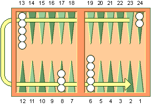
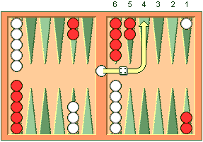
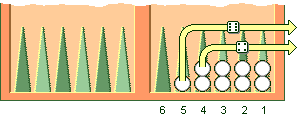

The object of the game is move all your checkers into your own home board and then bear them off. The first player to bear off all of their checkers wins the game.
Figure 1. Direction of movement of White’s checkers. Red’s checkers move in the opposite direction.
To start the game, each player throws a single die. This determines both the player to go first and the numbers to be played. If equal numbers come up, then both players roll again until they roll different numbers. The player throwing the higher number now moves his checkers according to the numbers showing on both dice. After the first roll, the players throw two dice and alternate turns. The roll of the dice indicates how many points, or pips, the player is to move his checkers. The checkers are always moved forward, to a lower-numbered point. The following rules apply:
A point occupied by a single checker of either color is called a blot. If an opposing checker lands on a blot, the blot is hit and placed on the bar. Any time a player has one or more checkers on the bar, his first obligation is to enter those checker(s) into the opposing home board. A checker is entered by moving it to an open point corresponding to one of the numbers on the rolled dice.For example, if a player rolls 4 and 6, he may enter a checker onto either the opponent’s four point or six point, so long as the prospective point is not occupied by two or more of the opponent’s checkers.
Once a player has moved all of his fifteen checkers into his home board, he may commence bearing off. A player bears off a checker by rolling a number that corresponds to the point on which the checker resides, and then removing that checker from the board. Thus, rolling a 6 permits the player to remove a checker from the six point.If there is no checker on the point indicated by the roll, the player must make a legal move using a checker on a higher-numbered point. If there are no checkers on higher-numbered points, the player is permitted (and required) to remove a checker from the highest point on which one of his checkers resides.
Source for images/information: usbgf.org/learn-backgammon/backgammon-rules-and-terms/rules-of-backgammon